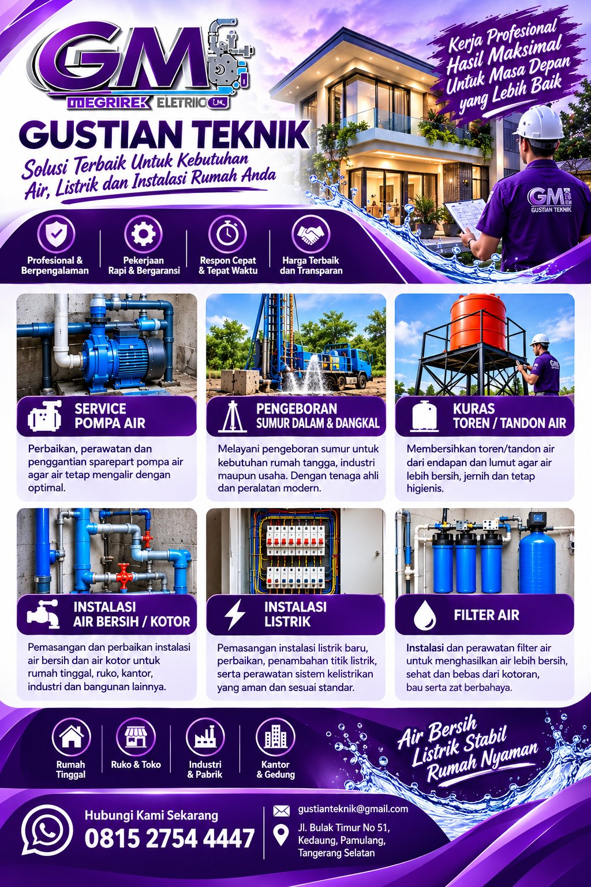
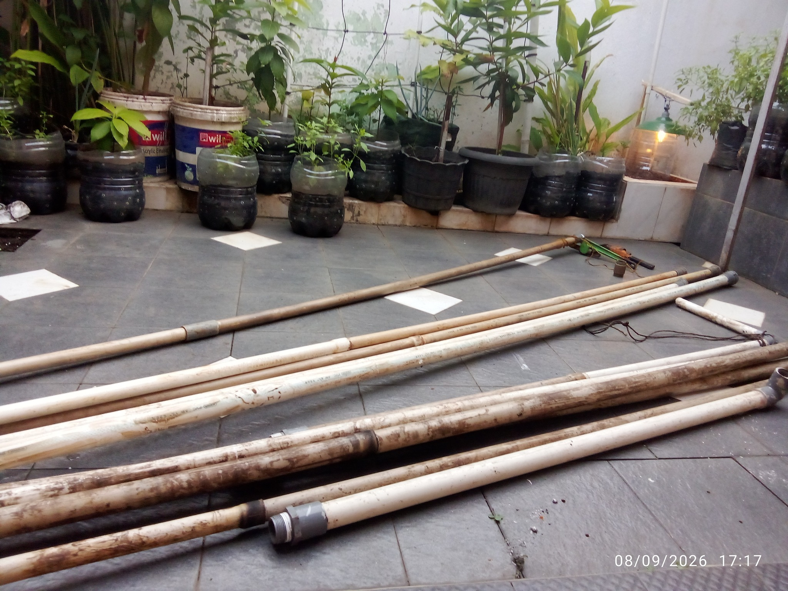
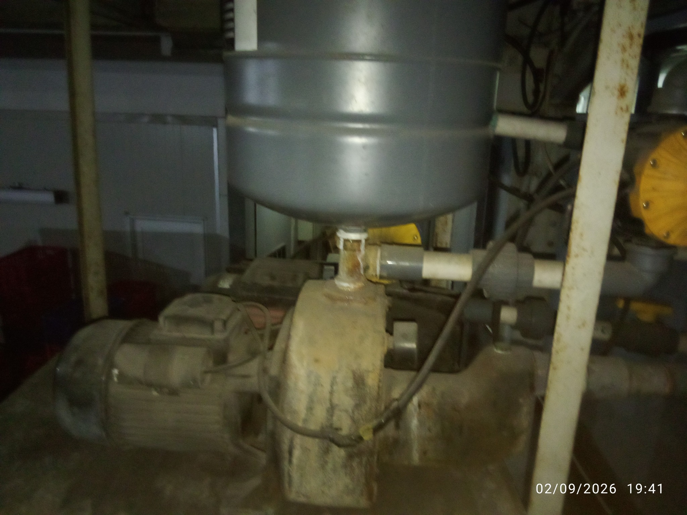
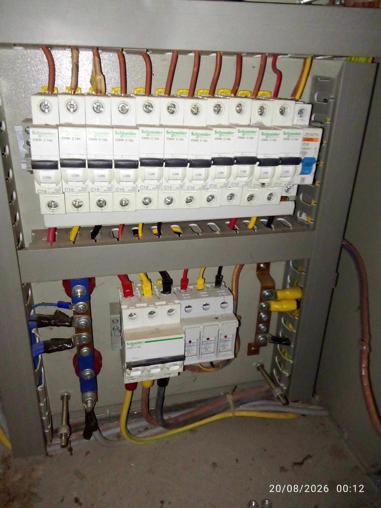
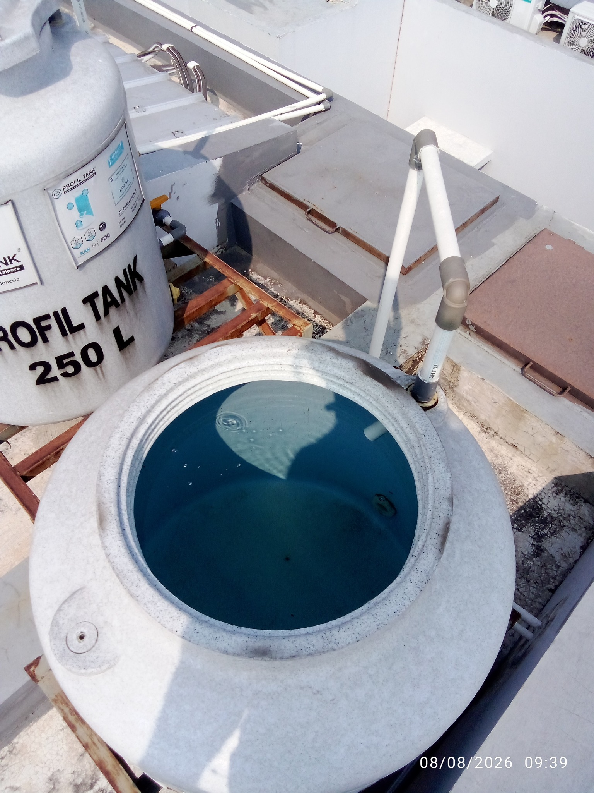
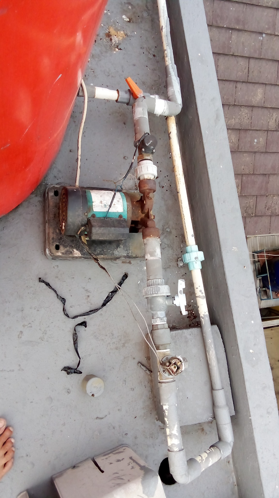
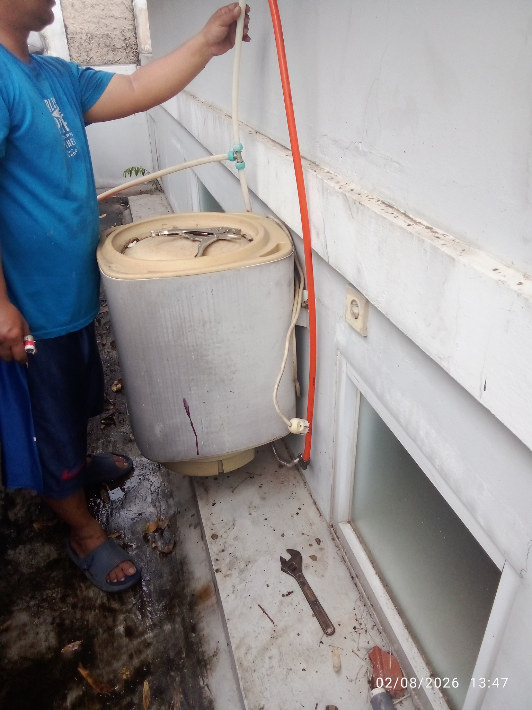

💧
Pengeboran Sumur
Sumur dangkal, sumur dalam, pengeboran & pemantauan sumur, bor arde dan bor pile.

Gustian Teknik melayani kebutuhan teknik rumah, ruko, toko, kantor, industri dan bangunan lainnya.
Gustian Teknik merupakan penyedia jasa teknik yang melayani berbagai kebutuhan pekerjaan air, listrik, plumbing, pengeboran sumur, pompa air, dan pekerjaan mechanical.
Kami melayani kebutuhan rumah tinggal, ruko & toko, kantor, industri, pabrik, serta berbagai bangunan lainnya dengan mengutamakan kualitas pekerjaan, kerapian, pelayanan yang responsif dan solusi yang sesuai kebutuhan pelanggan.
Berbagai solusi teknik untuk kebutuhan rumah dan bangunan.
Sumur dangkal, sumur dalam, pengeboran & pemantauan sumur, bor arde dan bor pile.
Pemasangan, service, perbaikan, perawatan dan penggantian sparepart pompa air.
Instalasi air bersih, air kotor, perpipaan, saluran air dan plumbing.
Pembersihan toren atau tandon dari endapan, lumpur dan kotoran.
Pemasangan dan perawatan sistem filter air sesuai kebutuhan.
Instalasi baru, penambahan titik, perbaikan dan perawatan sistem kelistrikan.
Pemasangan dan perbaikan pipa, saluran air, saluran mampet dan plumbing bangunan.
Pekerjaan mechanical sesuai kebutuhan dan kondisi pekerjaan di lapangan.
Beberapa dokumentasi pekerjaan Gustian Teknik.






Hubungi Gustian Teknik untuk informasi dan penjadwalan pekerjaan.
Layanan 24 jam untuk kebutuhan teknik Anda.
Jl. Bulak Timur No. 51, Kedaung, Kec. Pamulang, Kota Tangerang Selatan, Banten 15415
Buka 24 Jam